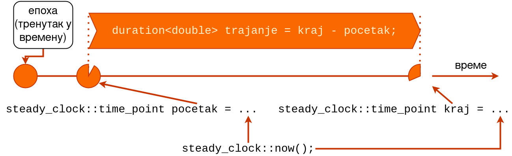

std::ratio)typedef ratio<1, 1000> milli; // npr. metar 1 je 1000 milimetarananomicromillicentidecidecahectomegastd::chrono.std::chrono::duration - временски период/интервал (између два тренутка у времену)std::chrono::time_point - тренутак у времену (измерен часовником)std::chrono::Clock - часовникstd::chrono::duration.hoursminutessecondsmillisecondsmicrosecondsnanosecondsПредефинисани типови временских периода:
typedef duration<long, ratio<60>> minutes;
minutes m1(3); // 3: tokom upotrebe se
// preracunava u sekunde [180s]
minutes m2(5);
minutes m3 = m1 + m2; // 8 minuta [480s]
typedef duration<double, milli> dms;
dms dm1(1.3);
dms dm2(5);
dms dm3 = dm1 + dm2; // 6.3
dms dm4 = dm1 + m1; // 180 001.3 = 3 min + 1.3ms
minutes m4 = m1 + dm2;
// linija iznad se ne kompajlira! Gubitak preciznosti!
milliseconds m5 = dm1;
// linija iznad se ne kompajlira! G. P.! [double->long]std::chrono::time_point.now() неког од часовника.std::chrono::system_clock - базиран на системском сату, подесан за приказ календарских информација кориснику (приказ у облику датума и времена) али због скокова није најподеснији за мерење трајања операцијаstd::chrono::steady_clock - увек монотоно растући, најадекватнији за мерење операцијаstd::chrono::high_resolution_clock - часовник највише могуће прецизности; неретко се може наићи на ситуацију да је већ 2. сат најпрецизнији па су исти
04_parking)top
04_parking и пратимо промене стања.std::condition_variablestd::condition_variable управо решава проблем активног чекања.std::unique_lock.wait()notify_one()notify_all()04_parking)while (stanje == ZAUZET) а не if (stanje == ZAUZET)?wait() нит улази у стање чекања (спава), све док се експлицитно не “пробуди” позивом notify_one() или notify_all().